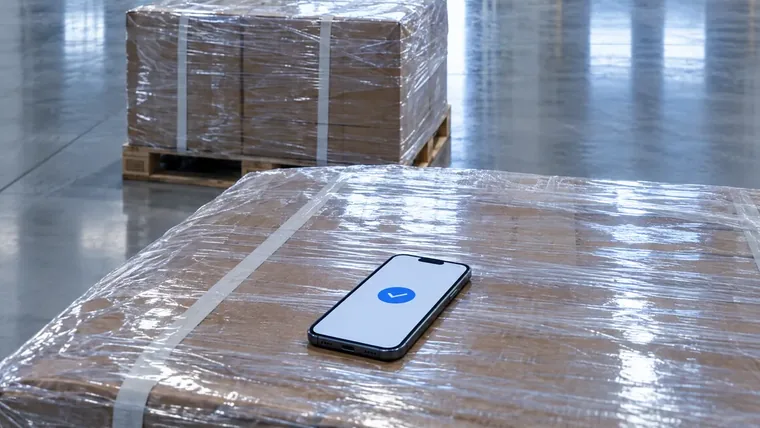
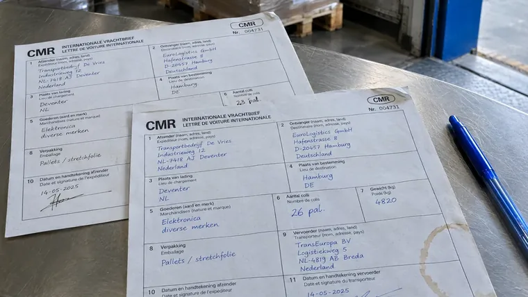
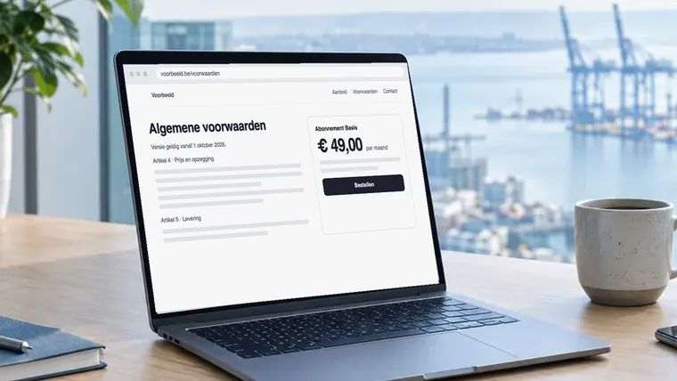
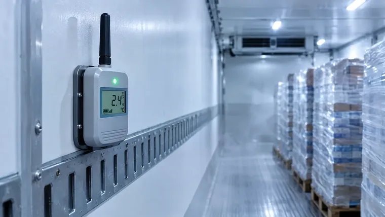

9e41…a7c3ongewijzigd
De eerste 100 registraties per maand zijn gratis. Geen betaalgegevens nodig. Of plan 15 minuten
Leveringen, foto's, metingen, documenten en webpagina's. Vidimus legt ze vast op het moment zelf en verankert ze binnen vijf minuten. Niemand kan ze daarna nog ongemerkt veranderen, ook wij niet.
Zo is bij een schadeclaim, een afgekeurde lading of een discussie na te gaan wat er stond en wanneer: één vastgelegde versie, voor iedereen dezelfde en door elke partij zelf na te rekenen.
Een levering of een webpagina: voor Vidimus is het een registratie. Dezelfde vastlegging, dezelfde controle. Voorbeelden.

9e41…a7c3ongewijzigd

4b8e…0d17ongewijzigd

c2d9…5a10ongewijzigd

7f3a…e04bongewijzigd

2c7f…e01aongewijzigd
5d2c…9a41ongewijzigd
Vrijdag, levering van 26 paletten. Maandag mailt de klant: “Wij hebben er maar 23 ontvangen.” Uw vrachtbrief zegt 26, de zijne 23. Zonder bewijs dat u zelf niet kunt wijzigen, betaalt u: de creditnota, de uren van uw planner, soms de klant.
Of het heet: “die deuk zat er al”, “die prijs stond niet op de site”, “dat meerwerk hebben we nooit gevraagd”.
Uw historiek is waardevol, maar staat in hetzelfde systeem als de gegevens.
Vidimus verankert buiten uw systeem.
Uw tegenpartij moet u op uw woord geloven.
Zij controleert het zelf, zonder account.
Software, sensoren, foto's en mappen houden elk een eigen historiek bij.
Eén bewijslaag over al die registraties.
De auditor reconstrueert alles uit exports.
Een bewijsbundel die hij zelf narekent.
In de app met foto, plaats en handtekening. Of automatisch vanuit uw software, sensoren of databank.
elke partij op de eigen telefoonElke registratie krijgt meteen haar vingerafdruk en handtekening. Daarna volgt een tijdstempel van een onafhankelijke dienst. De tijd komt niet van u en niet van ons.
tijdstempel + Bitcoin-ankerUw klant, verzekeraar of rechter controleert het zelf, zonder account. Met de bewijsbundel zelfs volledig zonder Vidimus.
ongewijzigd · alle controles stemmen overeenVoorbeeld · registratieongewijzigd
alle controles stemmen overeen
Voor foto's, overdrachten en handtekeningen. De andere partij bevestigt ter plaatse, zonder account en zonder app.


Voor software, sensoren en databanken. Uw systeem blijft de bron.
Lever bewijs in uw eigen product, zonder iets te bouwen.
Verander het aantal paletten op deze vrachtbrief en kijk wat er met het bewijs gebeurt. Alles wordt live in uw browser berekend.
Bekijk een voorbeeldcontroleCMR · AFL-2026-0913fictief voorbeeld
ongewijzigd
Dit is exact wat op 4 september om 15:13 (UTC+2) werd vastgelegd.
berekenen…berekenen…Eén product. Telkens een andere discussie, en telkens dezelfde vraag: wat stond er, en wanneer?
Wij hebben er maar 23 ontvangen.
Levering, tijdstip en staat, door beide partijen getekend.
Lees de toepassing Vastgoed en verhuurDie schade was er al bij de intrede.
De plaatsbeschrijving bij intrede én uittrede, voor beide partijen na te rekenen.
Lees de toepassing Bouw en renovatieDat meerwerk hebben we nooit gevraagd.
Het akkoord op het moment zelf, met foto en handtekening.
Lees de toepassing Verhuur van materieelDie deuk zat er al.
De afgiftestaat bij vertrek en bij terugname, door beide partijen getekend.
Lees de toepassing IT en databankenWat veranderde de aanvaller in onze gegevens?
De stand van uw gegevens, vastgelegd vóór er iets gebeurt.
Lees de toepassing Koelketen en zorgDe koeling is onderweg uitgevallen.
Wat de sensor doorstuurde, op het moment zelf vastgelegd.
Lees de toepassingDe rechter weegt elk bewijs vrij. Uw registratie is via hashberekeningen die u zelf kunt narekenen (Merkle-pad, Evidence Record) verbonden met de wortel van haar groep. Bevat die groep registraties van een klantorganisatie, dan staat op die wortel een gekwalificeerde tijdstempel van GLOBALTRUST. Voor die tijdstempel geldt in de hele EU het vermoeden dat datum en tijd juist zijn (eIDAS, art. 41.2); de registratie bestond dus uiterlijk op dat tijdstip. Of het vermoeden ook voor deze registratie geldt, beoordeelt de rechter. Vidimus toont wat er vastlag; wie gelijk heeft, beslist de rechter.
Nee. Uw eigen software, van ERP tot boekhouding of databank, blijft de bron. Vidimus legt de registraties die ertoe doen vast en verankert ze, via de app of een koppeling.
In een gewoon logboek staat alles versleuteld op servers in de EU, met een eigen sleutel per organisatie. Onze server opent uw inhoud alleen wanneer de dienst dat nodig heeft, zoals tonen, zoeken of een bewijsbundel maken, en elke opening staat in uw inzagen. Wilt u dat Vidimus ook technisch niets kan lezen? Kies een vertrouwelijk logboek: de telefoon of uw systeem versleutelt alles vóór het verzenden en alleen u hebt de sleutel. Dan ziet Vidimus de vingerafdruk en een korte envelop (soort, referentie, bron en tijdstip), niet de inhoud. Installeren hoeft u niets, u bewaart één herstelbestand.
Eén vastgelegd moment: een levering, foto, inspectie, document of webpagina. Tien foto's van dezelfde levering, met de handtekening erbij, zijn samen één registratie. Metingen van een sensor tellen niet apart.
Stopt Vidimus vrijwillig, dan melden we dat minstens negentig dagen vooraf en kunt u in die periode alles meenemen; bij faillissement beslist de curator. Uw bundels blijven narekenbaar: elke bewijsbundel controleert u zonder Vidimus, met een klein script of met de software van de Europese Commissie.

“Wij tekenen met naam en gezicht voor wat we bouwen. U belt niet met een supportdesk, u belt met wie het gebouwd heeft.”
Begin vandaag: de eerste 100 registraties per maand zijn gratis. Een bestuurder identificeert uw bedrijf één keer met de eID; daarna maakt u uw eerste logboek in enkele minuten.
Geen betaalgegevens nodig · antwoord binnen één werkdag